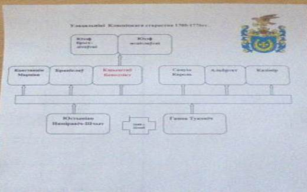
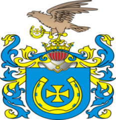
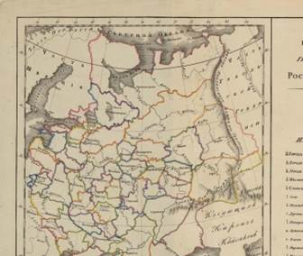

Клясціцы ў 18-м стагоддзі
1700-1776 гг. :
Клясіцкае стараства знаходзіцца пад уладай шляхецкага роду Шчытоў. Шляхцічы Шчыты герба Ястрэбец валодалі Клясіцамі да 1772 г.- часу першага падзелу Рэчы Паспалітай.


1776 г.-канец XVIII ст. :
Клясіцы
былі перададзеныя ў казну Расійскай Імперыі.
